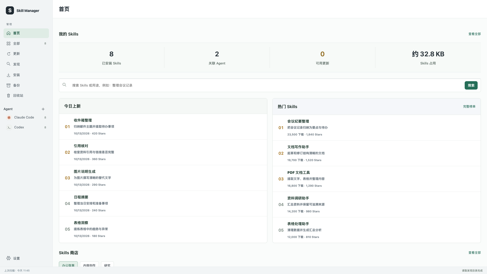

Agent 工具 / 实战案例 / 2026.10
Skill Manager
从技能管理，到项目空间清理。
Skills 越装越多，AI 项目的图片、模型和历史文件也越积越多。我把“看清装了什么”和“判断哪些文件能清理”，整理进同一个本地工作台。
查看开源项目 ↗
从自己的麻烦开始
在多个 Agent 之间安装 Skills 后，我经常记不清装在哪里、是不是同一个版本、更新之后怎样恢复。Skill Manager 最初解决的就是这些问题：统一查看，按来源检查更新，保留备份和回收站。
后来，新的问题出现在项目目录里。多轮生成留下大量图片、视频、模型和历史版本，磁盘占用越来越大。单纯列出文件没有用，我需要知道哪个项目大、里面是什么，以及删掉后会有什么影响。
先让流程简单下来
用户不应该先理解目录结构和校验规则，才能开始清理。我把主流程收敛成四步：选范围、看排行、分析选中项目、决定是否清理。
难判断的事情由工具检查，最后的取舍留给用户。建议只讲清楚要清理什么、多少文件、占多少空间，以及删除后的影响。确认后先进入现有回收站，保留恢复的机会。
- 01
扫描项目
选择 Agent 和项目，记住上次的勾选与排除范围。
- 02
查看空间排行
按占用找出大项目，勾选需要进一步检查的项目。
- 03
批量分析
检查缓存、重复内容和文件引用，进度显示在对应项目上。
- 04
选择后清理
读清影响，再决定保留或移入回收站；不自动删除。
迭代中的关键判断
不是找到重复文件，就算完成了。
第一版虽然能统计出大量占用，却只能给出很少的建议。问题不是按钮不够多，而是分析范围和判断依据不够完整：大目录划分太粗，只能在单个项目内找重复，一些引用检查遇到大文件就跳过。
项目要分得清
把工作区和日期目录下的独立项目拆开，父子目录不重复统计，避免一个巨大的“Codex 目录”掩盖真正的占用。
副本要有去处
补上跨项目重复检测，核对相同内容；每个独立项目保留必要副本，原始输入、模型和已识别的贴图依赖优先保留。
没查完就继续查
大文本分块读取，保存已完成的检查。再次分析从已有进度继续，空间统计、重复检测和引用检查分别记录完成情况。
真实项目验证
用同一批 Codex 项目检查改动。
这轮复测沿用相同的 423 个项目范围和上轮空间排行，重新执行内容与引用分析。验证过程没有移动或删除真实项目文件；回收站的移动、恢复和永久删除流程使用临时文件测试。
| 检查项 | 调整前 | 调整后 |
|---|---|---|
| 完整分析的项目 | 351 | 421 |
| 保留部分结果的项目 | 72 | 2 |
| 可选清理候选占用 | 约 9.61 GB | 约 9.64 GB |
两项大项目仍因引用读取预算保留部分结果，可以继续检查。9.64 GB 是候选文件占用，不是已释放空间，也不是可以无条件删除的承诺。
发布前，源目录和独立安装副本分别通过 658 项 Python 测试，并验证了桌面、手机上的项目扫描、批量分析、清理建议和回收站交互。最终更新以 1.5.0 版本提交到公开仓库。
我的收获
界面可以更简单，判断依据不能省。
这次迭代里，我反复删掉过多的说明、重复的状态和不必要的入口，把一行项目还给一行，把勾选还给复选框，把进度放回正在处理的项目。
同时，后台需要更细致：内容相同不代表路径可以消失，没有发现引用不代表从未使用，进入回收站也不等于已经释放磁盘。工具的价值，是帮用户减少判断负担，同时把真正的影响说清楚。